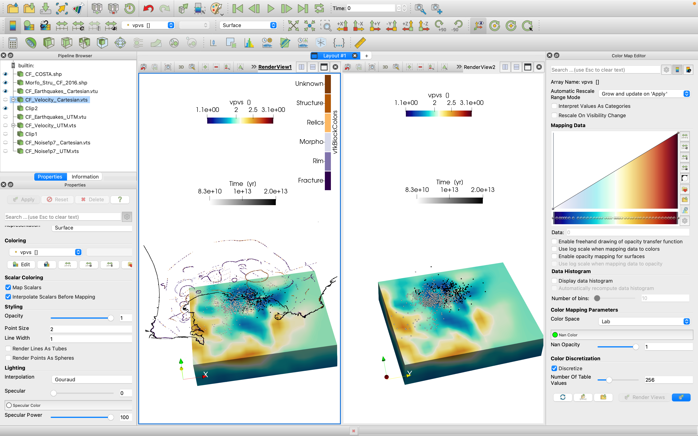
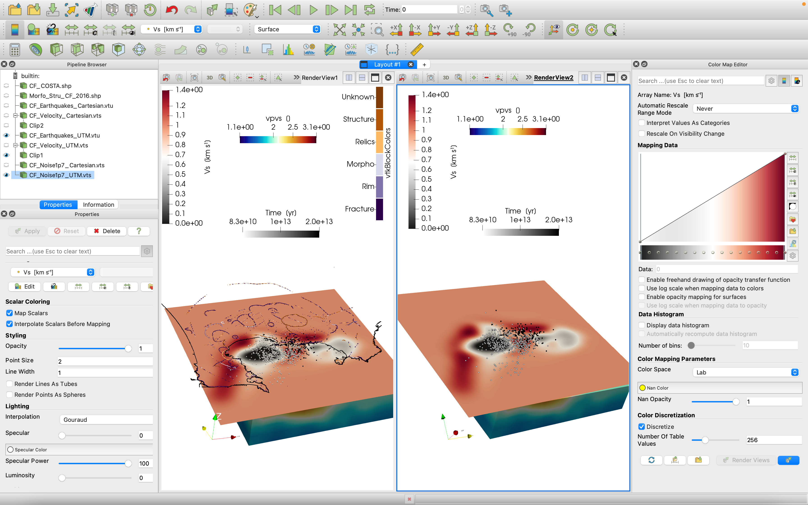

Km-scale volcano tutorial using cartesian coordinates
Goal
This tutorial visualizes available 3D data at a local volcano (Campi Flegrei caldera, Italy) using cartesian coordinates. This is done, e.g., when we only have geomorphological data in cartesian coordinates. It includes geological and geophysical data in UTM format from the following papers:
Two shape files containing coastline and faults:
- Vilardo, G., Ventura, G., Bellucci Sessa, E. and Terranova, C., 2013. Morphometry of the Campi Flegrei caldera (southern Italy). Journal of maps, 9(4), pp.635-640. doi:10.1080/17445647.2013.842508
Earthquake data for two volcanic unrests, in 1983-84 and 2005-2016:
De Siena, L., Chiodini, G., Vilardo, G., Del Pezzo, E., Castellano, M., Colombelli, S., Tisato, N. and Ventura, G., 2017. Source and dynamics of a volcanic caldera unrest: Campi Flegrei, 1983–84. Scientific reports, 7(1), pp.1-13. doi:10.1038/s41598-017-08192-7
De Siena, L., Sammarco, C., Cornwell, D.G., La Rocca, M., Bianco, F., Zaccarelli, L. and Nakahara, H., 2018. Ambient seismic noise image of the structurally controlled heat and fluid feeder pathway at Campi Flegrei caldera. Geophysical Research Letters, 45(13), pp.6428-6436. doi:10.1029/2018GL078817
Travel time tomography model:
- Battaglia, Jean, Aldo Zollo, Jean Virieux, and Dario Dello Iacono, 2008. Merging active and passive data sets in traveltime tomography: the case study of Campi Flegrei caldera (Southern Italy). Geophysical Prospecting 56, no. 4: 555-573. doi:10.1111/j.1365-2478.2007.00687.x
Ambient noise tomography model:
- Battaglia, Jean, Aldo Zollo, Jean Virieux, and Dario Dello Iacono, 2008. Merging active and passive data sets in traveltime tomography: the case study of Campi Flegrei caldera (Southern Italy). Geophysical Prospecting 56, no. 4: 555-573. doi:10.1111/j.1365-2478.2007.00687.x
Steps
1. Download all data for region
You will need to download the zipped folder containing all files from here.
Make sure that you are in the unzipped directory.
2. Geomorphology
Load both the the shape (.shp) files contained in "./Geomorphology/*.shp" inside Paraview. In the following figures we show the Cartesian representation (not geolocalized - left) and the UTM (UTM). Our shape files can only be loaded in the cartesian:
To reproduce it, represent the coastline as data points with black solid color and assign your favourite color map to the morphology. Note that each block color number corresponds to a different morphology. Beware that this file only works in cartesian coordinate, as it is still impossible to generate shape files in real UTM coordinates
3. Earthquakes
Now let's plot earthquake data provided as text files. Start loading the data contained in "./SeismicLocations/*.txt". The first column gives us a temporal marker we can use to plot earthquakes in different periods.
julia> using DelimitedFiles, GeophysicalModelGenerator, Glob, GeoStats
julia> data_80s = readdlm("SeismicLocations/Seismicity_UTM_1983_1984.txt", '\t', skipstart=0, header=false);
julia> data_00s = readdlm("SeismicLocations/Seismicity_UTM_2005_2016.txt", ' ', skipstart=0, header=false);
julia> data = vcat(data_80s,data_00s)
julia> time = data[:,1];
julia> WE = data[:,2];
julia> SN = data[:,3];
julia> depth = data[:,4];
julia> EQ_Data_Cart = CartData(WE,SN,depth,(Depth=depth * m,Time=time * yr,));
julia> Write_Paraview(EQ_Data_Cart, "CF_Earthquakes_Cartesian", PointsData=true)
julia> EQ_Data_UTM = UTMData(WE, SN, depth, 33, true, (Depth=depth * m,Time=time * yr,));
julia> Data_set_UTM = convert(GeophysicalModelGenerator.GeoData,EQ_Data_UTM)
julia> Write_Paraview(Data_set_UTM, "CF_Earthquakes_UTM", PointsData=true)Save in paraview with both cartesian and UTM formats. The final seismicity map looks like this:

The colour scale distinguishes earthquakes of different decades. Notice the progressive migration of recent seismicity (black dots) towards East.
4. Velocity model
Using the Alps tutorial it is easy to create a paraview file from the Vp, Vs and Vp/Vs model in "./TravelTmeTomography/modvPS.dat" for both cartesian and UTM coordinates.
julia> using DelimitedFiles, GeophysicalModelGenerator
julia> data = readdlm("TravelTimeTomography/modvPS.dat", '\t', Float64, skipstart=0, header=false);
julia> WE = data[:,1];
julia> SN = data[:,2];
julia> depth = data[:,3];
julia> Vp = data[:,4];
julia> Vs = data[:,5];
julia> VpVs = data[:,6];
julia> resolution = (length(unique(depth)), length(unique(SN)), length(unique(WE)))
julia> dim_perm = [3 2 1]
julia> we = permutedims(reshape(WE, resolution), dim_perm);
julia> sn = permutedims(reshape(SN, resolution), dim_perm);
julia> depth = permutedims(reshape(depth, resolution), dim_perm);
julia> Vp3d = permutedims(reshape(Vp, resolution), dim_perm);
julia> Vs3d = permutedims(reshape(Vs, resolution), dim_perm);
julia> Vp_Vs3d = permutedims(reshape(VpVs, resolution), dim_perm);
julia> Data_set_Cartesian = CartData(we, sn, depth, (vp = Vp3d * (km / s), vs = Vs3d * (km / s), vpvs = Vp_Vs3d,))
julia> Write_Paraview(Data_set_Cartesian, "CF_Velocity_Cartesian")
julia> Data_set = UTMData(we, sn, depth, 33, true, (vp = Vp3d * (km / s), vs = Vs3d * (km / s), vpvs = Vp_Vs3d,))
julia> Data_set_UTM = convert(GeophysicalModelGenerator.GeoData,Data_set)
julia> Write_Paraview(Data_set_UTM, "CF_Velocity_UTM")Including the Vp/Vs model in the previous Paraview file workspace:

5. Horizontal slices of shear velocity on irregular grid
Using ambient noise you can map shear wave velocity at different depths. The models at each depth are contained in the files "./NoiseTomography/*.txt". We read them consecutively in a "for" loop:
julia> list_files = glob("AmbientNoiseTomography/*.txt");
julia> li = size(list_files, 1);
julia> for i = 1:li
julia> nameFile = list_files[i];
julia> name_vts = name_vts[24:26];
julia> data = readdlm(nameFile, '\t', Float64);
julia> WE = data[:,1];
julia> SN = data[:,2];
julia> depth = data[:,3];
julia> Vs = data[:,4];However these models are too wide, so it is better to constrain them:
julia> findall( (WE .>= 419000) .& (WE.<=435000) .& (SN.>=4514000) .& (SN.<=4528000) );
julia> WE = WE[ind];
julia> SN = SN[ind];
julia> depth = depth[ind];
julia> Vs = Vs[ind];Also, nodes are irregular, hence we create a 3D regular UTM:
julia> l = length(WE);
julia> n_WE = minimum(WE):100:maximum(WE);
julia> n_SN = minimum(SN):100:maximum(SN);
julia> we, sn, Depth = XYZGrid(n_WE, n_SN, depth[1]);
julia> Vs_3D = zeros(size(Depth));
julia> Cgrid = GeoStats.CartesianGrid((size(we, 1), size(we, 2)), (minimum(we), minimum(sn)), (we[2,2,1] - we[1,1,1], sn[2,2,1] - sn[1,1,1]))
julia> coord = PointSet([WE[:]'; SN[:]']);
julia> Geo = georef((Vs = Vs[:],), coord);
julia> P = EstimationProblem(Geo, Cgrid, :Vs);
julia> S = IDW(:Vs => (;neighbors=2));
julia> sol = solve(P, S);
julia> sol_Vs = values(sol).Vs;
julia> Vs_2D = reshape(sol_Vs, size(domain(sol)));
julia> Vs_3D[:,:,1] = Vs_2D;
julia> Data_set_Cart = CartData(we, sn, Depth, (Vs = Vs_3D * (km / s),))
julia> Write_Paraview(Data_set_Cart, "CF_Noise" * name_vts * "_Cartesian")
julia> Data_set = UTMData(we, sn, Depth, 33, true, (Vs = Vs_3D*(km / s),));
julia> Data_set_UTM = convert(GeophysicalModelGenerator.GeoData, Data_set);
julia> Write_Paraview(Data_set_UTM, "CF_Noise_UTM_"*name_vts)
julia> endThis is one of the horizontal sections created by the code in the previous model in both reference systems:

If you want to run the entire example, you can find the .jl code here